Manual de Uso
Crecimiento y Desarrollo (CRED)
Manual de Uso
Crecimiento y Desarrollo (CRED)
Presentación
La utilización de la tecnología de la información y comunicación como instrumento te acerca a los servicios de salud es un proyecto desarrollado a través de la creación de plataformas webs especiales que sirven para brindar un servicio a la comunidad a través de Internet, de la telemedicina, las historias clínicas electrónicas, los mensajes de textos y las redes sociales.
Es por ello que en la presente gestión se han puesto al servicio de la población, una serie de herramientas tecnológicas en este caso las plataformas web con la finalidad de acercar los servicios de salud a los que más lo necesitan, como parte de la política de inclusión social. Dichos módulos son: programación de citas a los diversos servicios médicos, modulo triaje, Cred e inmunizaciones y consulta externa.
Modo de ingreso al modulo de CREED
a. Se debe usar el navegador Google Chrome o Firefox.

b. Debe escribir la url de la siguiente forma: http://cred.minsa.gob.pe
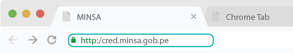A continuación, se debe escribir en los campos de usuario y contraseña, en este caso siempre es el DNI del personal. En seguida, clic en botón Ingresar.

Nota: Cada usuario tiene la opción de cambiar su contraseña por medidas de protección de datos.
Descripción de la Página de Inicio del Modulo de CRED.
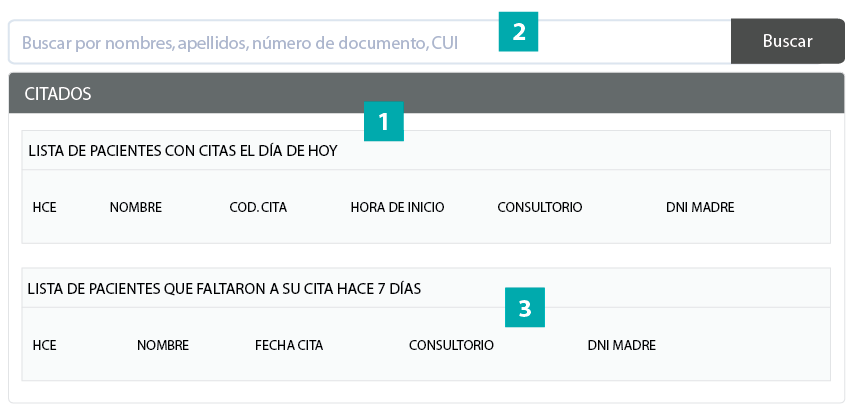1. Es importante empezar que, desde el módulo de admisión, todos los niños citados aparecen en forma automática en forma ordenada según la hora. Con sus botones de acceso entre ellas son: antecedentes, controles.

2. El campo buscador: en la cual se puede buscar por DNI o nombre y apellidos en los casos que algún niño no fue citado, pero está registrado en la base de datos del módulo.

3. Lista de pacientes que faltaron más 7 días: dicha lista son los nombres de los niños que no asistieron a sus controles.

Tal como se presenta en la siguiente figura:
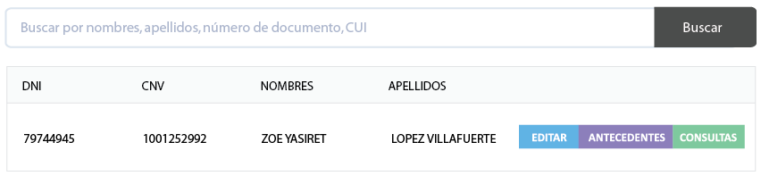Ingreso de información al modulo
En la sección Datos del niño.
- Se debe validar y completar la información del menor, siendo que esta interconectado con la base de datos de RENIEC.

- Datos de domicilio, se debe validar o modificar dichos campos

- Lugar de nacimiento e Institución educativa: En estos campos se valida la información con posibilidad de modificación.
- En caso de algunos menores que están asistiendo a instituciones educativas en la cual se registran el ubigeo, nombre de la institución, elección del tipo de institución y código modular que corresponda.

- Datos del familiar: en esta sección se debe registrar los datos de la madre y completar los datos, así como también los datos del padre o del tutor del menor.
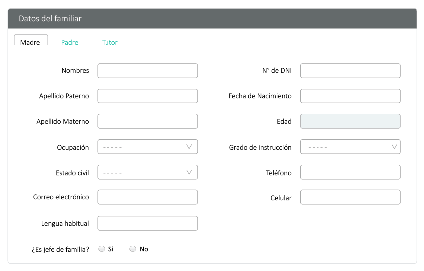Sección antecedentes
- Previamente, en la cabecera se observan los nombres y apellidos del menor, DNI o CNV, edad en meses y días, así como la fecha de nacimiento.
- Se debe registrar los datos comprendido al embarazo del menor (N° embarazo, N° atenciones prenatales y lugar de las atenciones prenatales), datos del parto (condición del parto, lugar del parto y personal que atendió el parto).
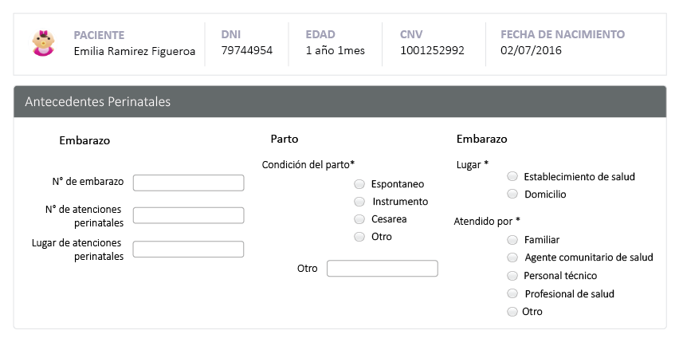- Datos del nacimiento: se registran los campos correspondientes al menor.
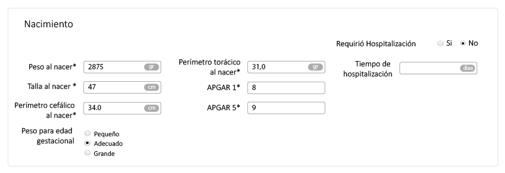- Antecedentes patológicos y familiares: en este campo se debe elegir según la lista de sugeridos y si lo desee registrar las observaciones además debe marcar el botón del diagnostico.
- En relación a los antecedentes familiares se debe elegir según su lista predeterminada y elegir al familiar quien sufra dicha enfermedad.
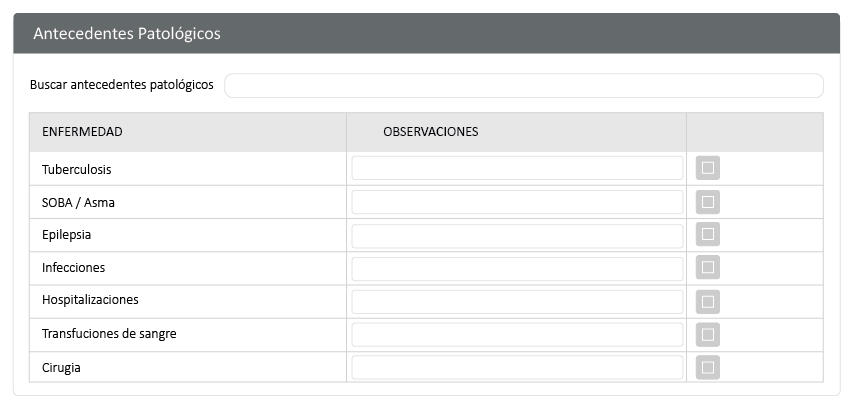 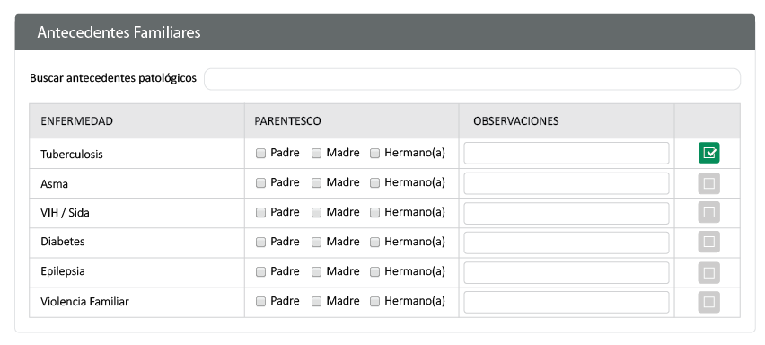Página de Resumen de Controles
- Se visualiza los controles Cred según la edad del menor, en la cual se crea un control Cred o en caso de omisión de datos se puede editar.
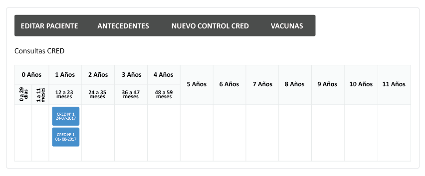Modo de ingreso de datos en control Cred
1. Nuevamente se visualiza el encabezado, los datos del menor: nombres completos, DNI, edad (también comprende en meses), CNV (si en caso lo tenga), fecha de nacimiento, N° atención Cred y edad que cuenta en la consulta.
2. Datos de la consulta: Se registra en forma automática la fecha de atención y hora de atención, número de control Cred (en caso no es correcto quitar el bloqueo y digitar el numero correcto) y visualiza la edad durante la atención en forma automática.
3. Signos Vitales: Se registra las funciones vitales, así como el peso (en gramos), talla (en cm), perímetro cefálico (pc) en cm, son datos obligatorios.
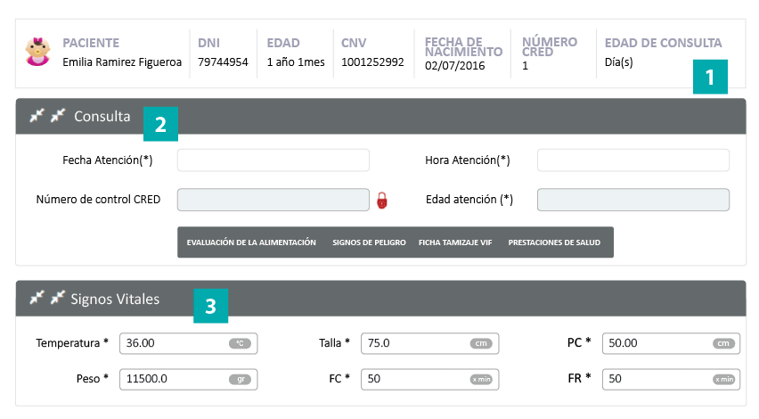4. Último examen de hemoglobina: Se visualiza el resultado de hemoglobina registrada en el sistema.
5. 5. Examen Físico: Según la evaluación de la enfermera, se registra si alguna área esta conservada o patológico y en forma opcional se digita en campo de observaciones.
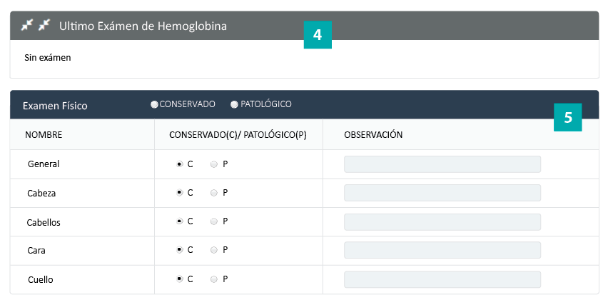Antes de terminar y pasar a la siguiente parte de la atención, hay botones para registrar la siguiente información.
Evaluación de la alimentación: Se pregunta a la madre según la alimentación del niño.
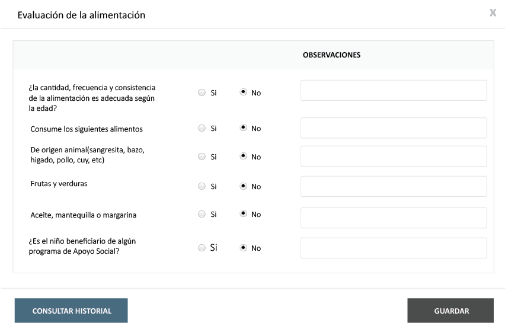Signos de alarma: Se pregunta a la madre acerca de algunos signos de alarma que pueda presentar al niño y registrar en forma opcional las observaciones.
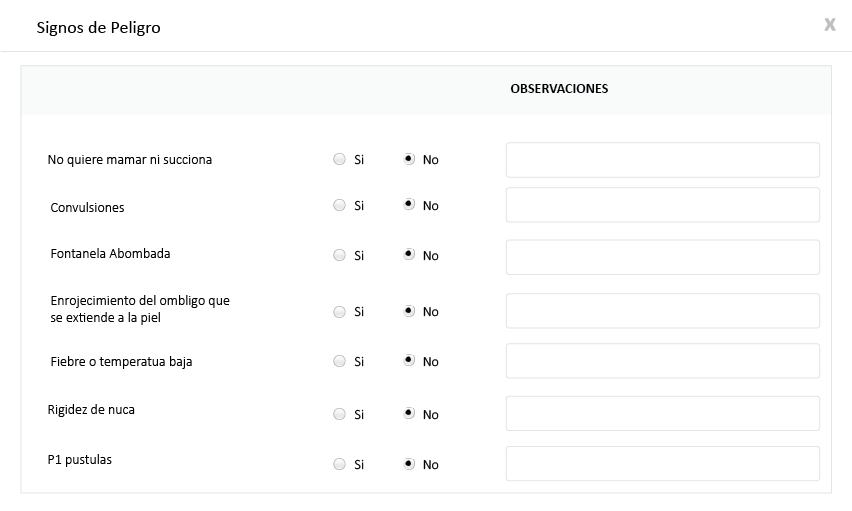Ficha de tamizaje de violencia intrafamiliar(VIF): En este ítem se registra según las respuestas de la madre, acerca de la violencia familia.
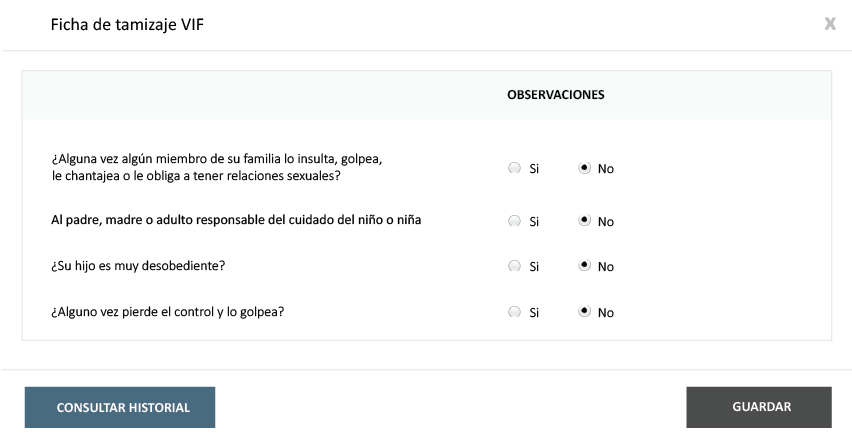Prestaciones de salud: En este ítem se registra entre otras prestaciones de salud que realizan con el niño y la madre; por ejemplo: participación en las sesiones de estimulación temprana, salud bucal, sesión educativa, sesión demostrativa y visita domiciliaria, en cada caso se registra las fechas realizadas, los motivos, los compromisos/ acuerdos y observaciones si se requiere.
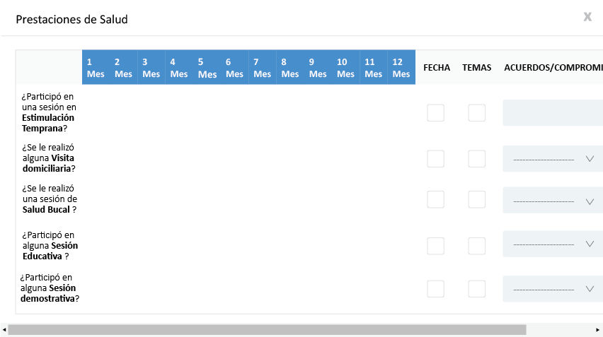La siguiente parte se encuentra lo siguientes campos:
6. Diagnóstico: Se registra los diagnósticos según la atención que recibió el menor. Tenemos una lista predeterminada y si no se encuentra hay un buscador puede escribir la palabra o con el código cie10. Al finalizar se debe marcar tipo de diagnóstico que corresponda: Definitivo(D), Presuntivo(P) o Repetitivo(R).
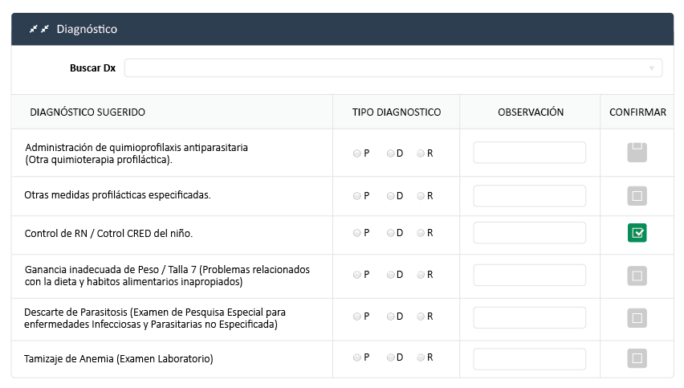GRAFICAS PESO/TALLA, PESO/EDAD, TALLA/EDAD, GANANCIA DE PESO Y PERÍMETRO CEFÁLICO
Para observar las gráficas cada una tienen sus accesos según el peso y talla registrada en la cual se visualiza, en cuanto tenga más atenciones Cred se formará la curva para la evaluación nutricional que realiza la enfermera para dar orientación a la madre.
 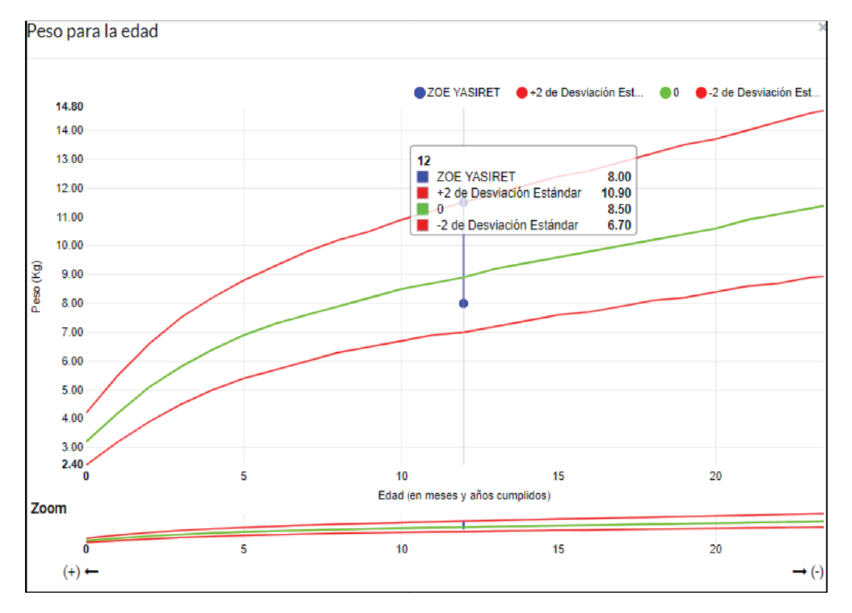
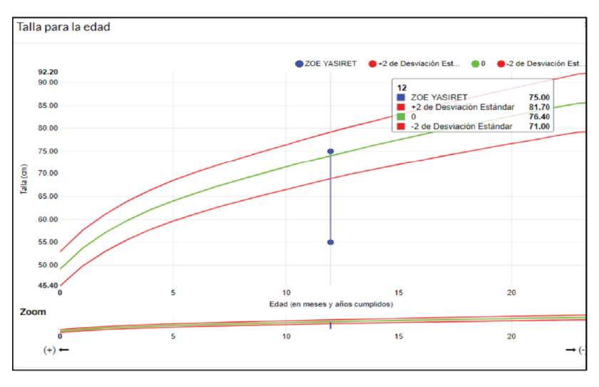
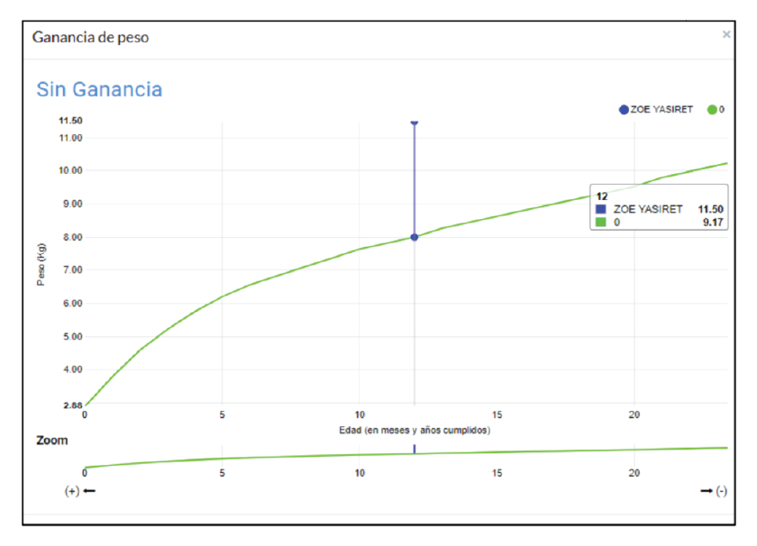
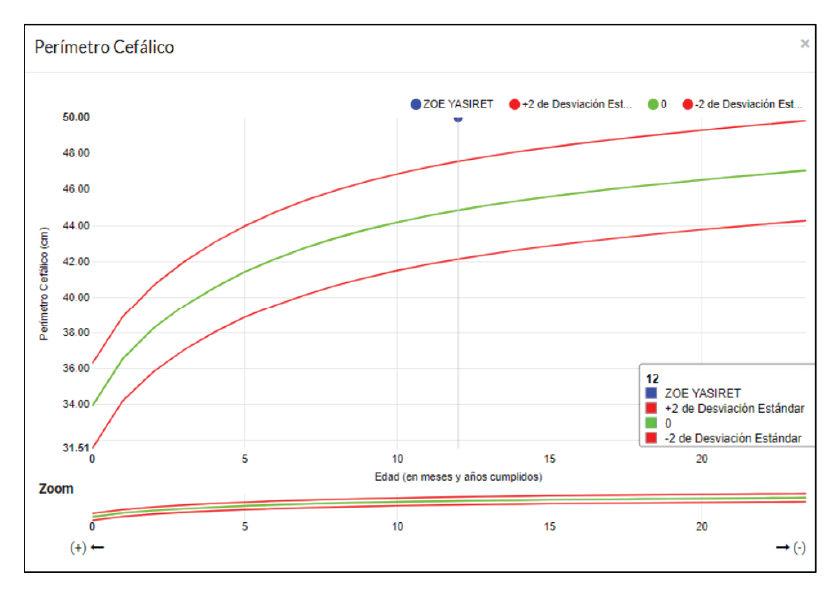
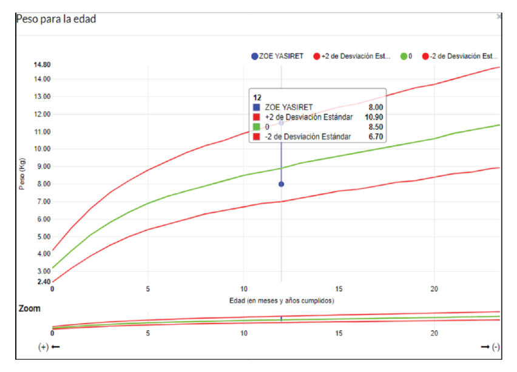
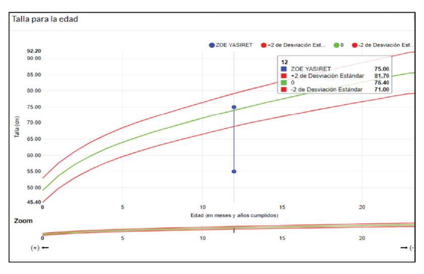
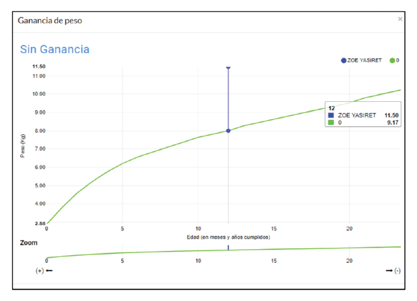
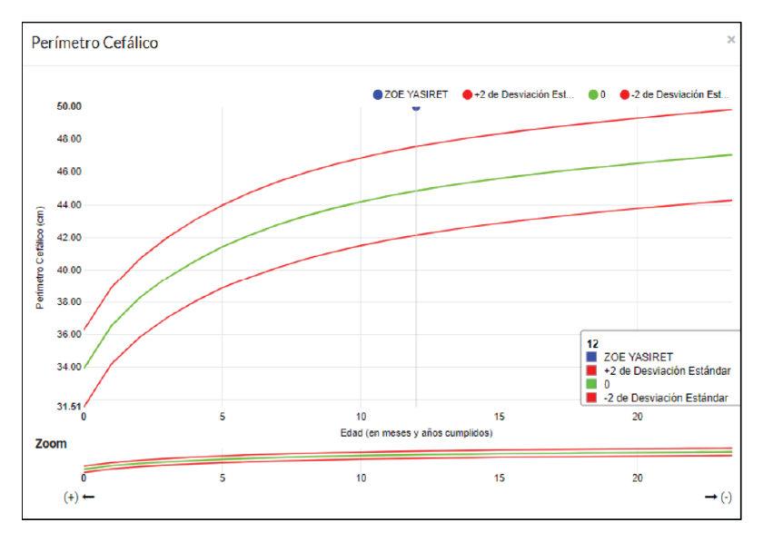
Al regresar a la atención Cred, se observará que el resultado de nutrición del niño está marcado en forma automática, solo se debe marcar si está en riesgo nutricional o no.
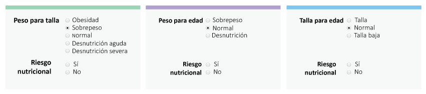TEST PERUANO DE DESARROLLO
En esta sección se registra según la edad del niño se marca en forma vertical las imágenes que cumplen y al terminar hacer clic en botón volver al control Cred.
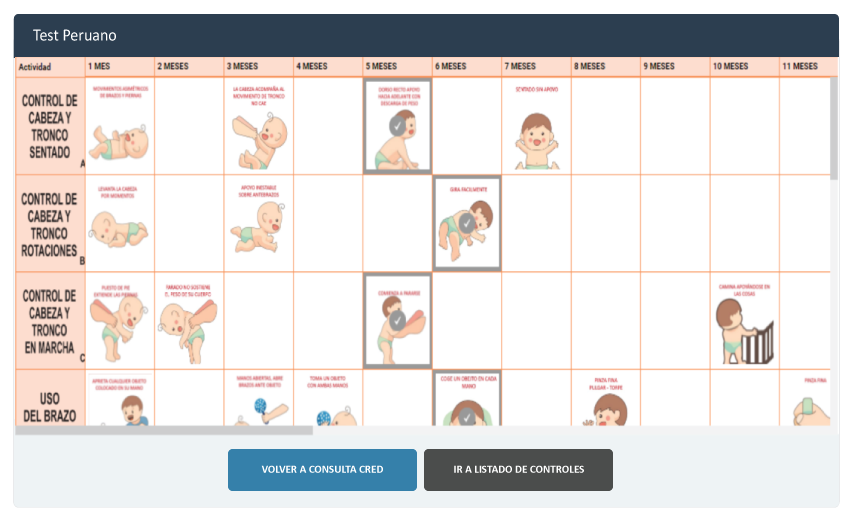Al regresar, se debe marcar el resultado de la evaluación del niño en el área de desarrollo.
En el área de laboratorio, se marca el grupo y factor, así como también los otros resultados. Pero lo más importante el registro de las hemoglobinas.
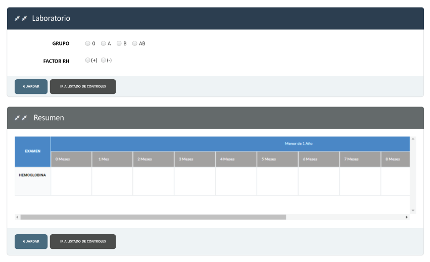En relación al tratamiento, según la valoración de la hemoglobina y el análisis del peso y talla del niño se elige si la administración es sulfato ferroso con la presentación en gotas o jarabe asi como también Multimicronutrientes se registra los sobres al ser entregados al finalizar la atención.
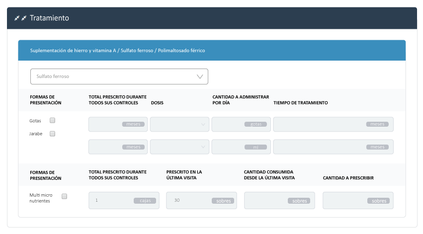Se registra en el caso si recibió el tratamiento antiparasitario y solo para los niños 12 meses, se debe marcar las prioridades y acuerdos de la madre debe realizar con el niño.
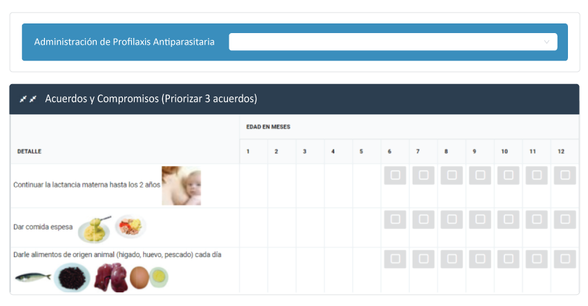En caso que el niño es enviado a diferentes interconsultas se debe registrar la fecha que fue atendido y escribir el motivo de la interconsulta. En caso de necesitar referencia por un motivo que no se pueda resolver, se debe anotar el lugar de referencia y el petitorio de los analisis de laboratorio.
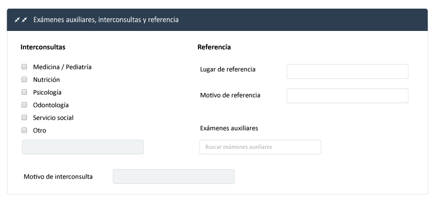Al terminar el registro, se regresa a la lista de atenciones cred.